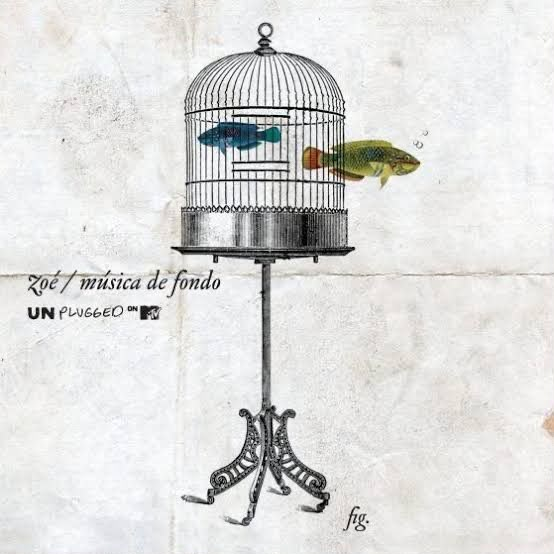
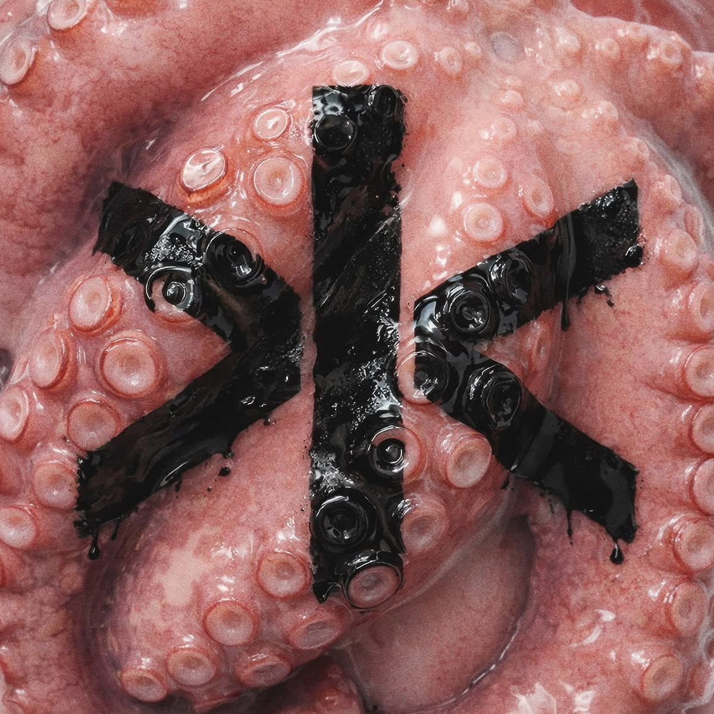
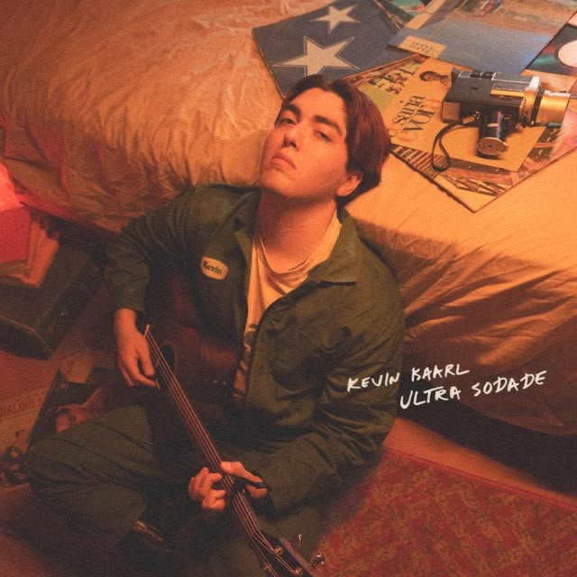
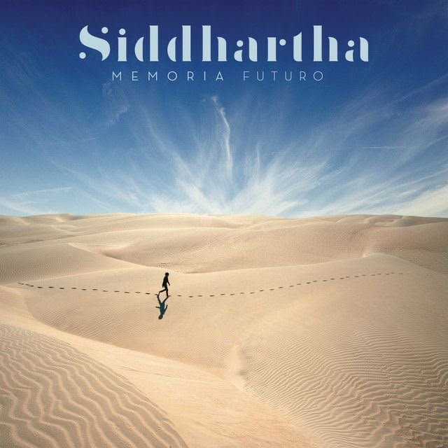
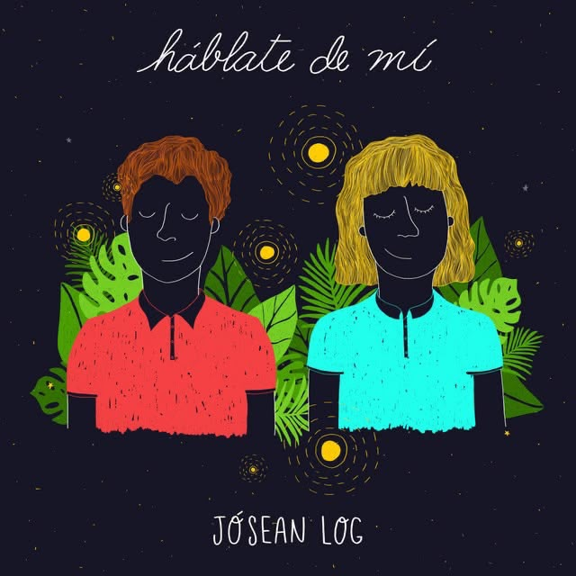
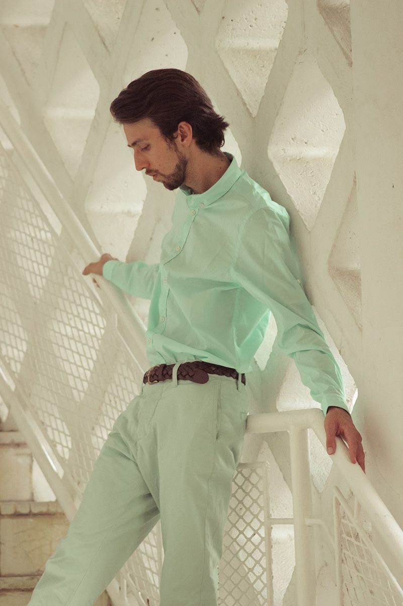
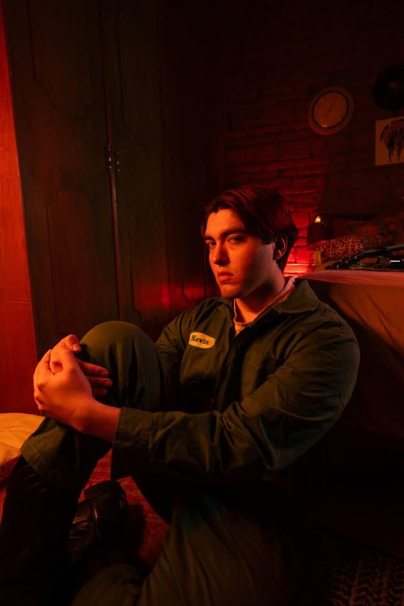
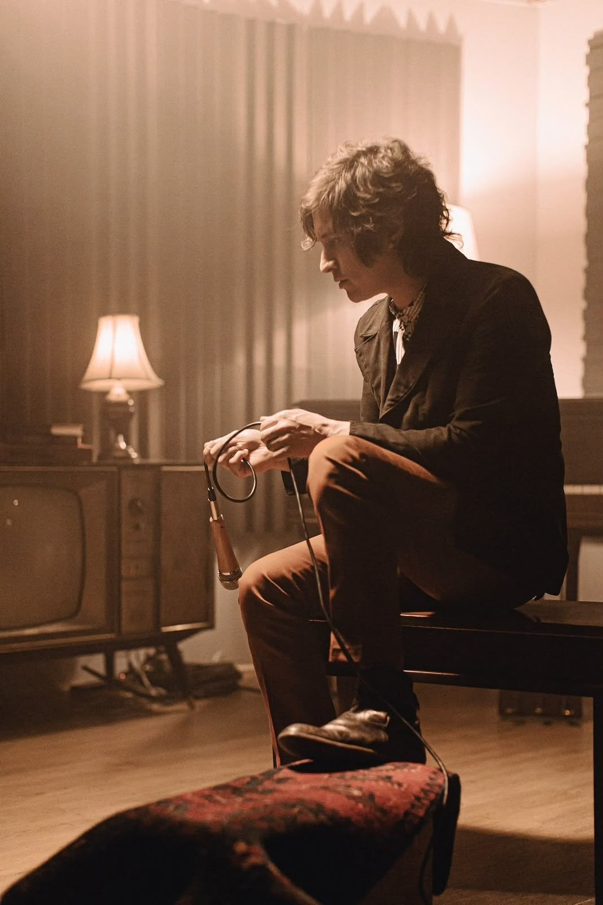
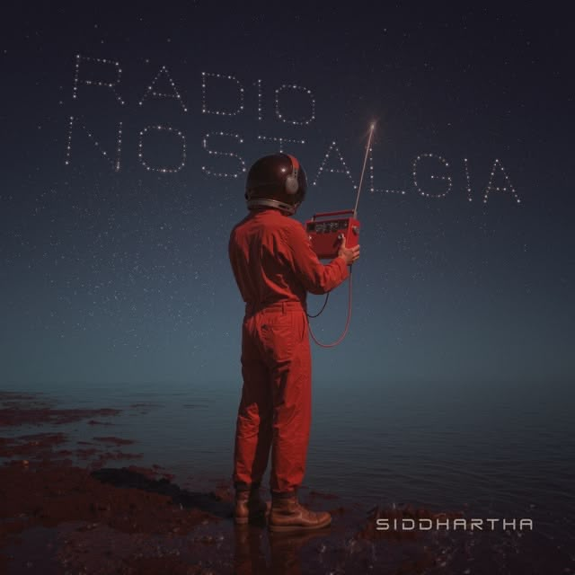

| # | Nombre | Album | Tiempo |
|---|---|---|---|
| 1 | 00:00 | 00.00 | 3:35 |
| 2 | Brújula | 00:00 | 4:12 |
| 3 | Únicos | Únicos | 4:12 |
| 4 | Ser Parte | Únicos | 4:17 |
| 5 | Paraíso lunar | 00:00 | 3:44 |





Álvaro Díaz es un cantante y compositor puertoriqueño que destaca por su estilo de mùsica urbana, mezclando gèneros como el reguetòn, trap, y pop alternativo.Sus canciones se caracterizan por tener sonidos diferentes, letras creativas,y una esencia moderna.Su mùsica transmite distintas emociones y conecta con quienes disfrutan de ritmos frescos y originales.

Josean Log es un cantante y compositor mexicana que se caracteriza por su estilo musical alternativo, combinando gèneros el indie pop, folk y pop latino sus canciones destacan por sus melodìas tranquilas, letras poèticas y sonidos relajados que transmiten emociones y cuentan historias sobre el amor, la nostalgia y la vida.Su mùsica tiene una esencia fresca, ìntima y muy personal.

Kevin Kaarl es un cantante y compositor mexicano originario de Chihuahua, conocido por su estilo indie folk y sus melodías acústicas. Su música se caracteriza por tener letras poéticas y profundas que hablan del amor, el desamor, la nostalgia y los sentimientos. Sus canciones tienen un sonido tranquilo y melancólico que logra transmitir emociones y conectar con quienes disfrutan de la música romántica y alternativa.

Siddhartha es un cantante, compositor y músico mexicano que destaca por su estilo de rock alternativo e indie pop. Su música se caracteriza por melodías envolventes, sonidos atmosféricos y letras profundas que hablan del amor, la vida, los sentimientos y la nostalgia. Sus canciones tienen una esencia tranquila, poética y emocional que logra conectar con quienes disfrutan de la música alternativa.
Zoé es una banda mexicana de rock alternativo que se distingue por combinar sonidos de rock psicodélico, indie y música electrónica. Sus canciones se caracterizan por melodías envolventes, letras poéticas y un estilo muy particular que habla del amor, los sueños, la nostalgia y las emociones. Su música crea una atmósfera única, misteriosa y profunda que conecta con quienes disfrutan de los sonidos alternativos.
PA KE
Álvaro Díaz
Chachachá
Josean Log
Peregrinos
Kevin Kaarl
Me Hace Falta
Siddartha
Luna
Zoé

Siddartha
Recomendaciones para ti
Similar a Siddhartha
Similar a Zoé
Similar a Kevin Kaarl
Similar a Álvaro Díaz